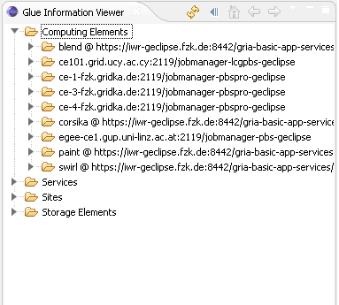
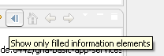

The information system presents the resources that support the VOs of the existing grid projects. The resources in g-Eclipse are divided into four main categories, Applications, Computing, Services and Storage. There are two ways to explore the available resources. One is through the grid project view, under the VO sub-tree and the other is through the GLUE information View which can be opened by selecting Window-> Show View-> Other-> g-Eclipse-> Glue Information View.
The Glue Information View presents the information obtained from the information systems of the existing grid projects. Each grid project has a VO. When defining a VO, the user can define the services that the information system can query. For example, in a gLite VO the user can define the bdii server that will be used (e.g. ldap://iwrbdii.fzk.de:2170) and in a GRIA VO the user can define the GRIA services. The data contained in the information view is obtained from the defined BDII services of the gLite projects and from the defined GRIA services for the GRIA projects.
The Glue Information Viewer provides filters that can constrain the information that is presented to the user. Currently, there are three filters available.
The user can also choose to present only the glue elements that are filled by the information services.
Data is refreshed on four occasions: